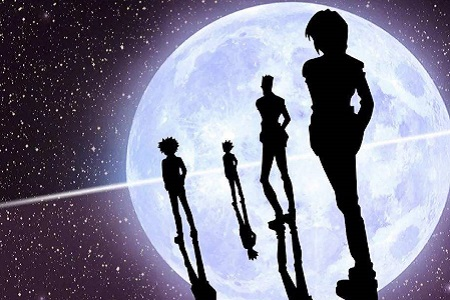

原图

blur(**px): 模糊，默认为0
brightness(?%): 亮度，默认为100%
contrast(?%): 对比度，默认为100%
drop-shadow(?px ?px ?px color):
参数按顺序为 "水平方向偏移 竖直方向偏移 模糊传播长度 颜色"
（和box-shadow的区别: box-shadow有内置阴影,并且为边框外面创建的阴影,并且可以有多层）
grayscale(?%): 灰度图，默认为0%
hue-rotate(?deg): 色相旋转，默认为0，范围为0-360，改变hsl中的h
invert(0-100%): 反转[取反色], 默认为0%
opacity(0-100%): 透明度，默认为100%
saturate(0-100%): 饱和度，默认为100%
sepia(0-100%): 转化为棕褐色，默认为0%
url(): 参数为SVG元素的id或者xml文件的路径